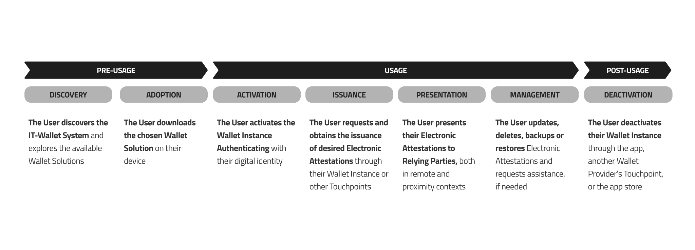
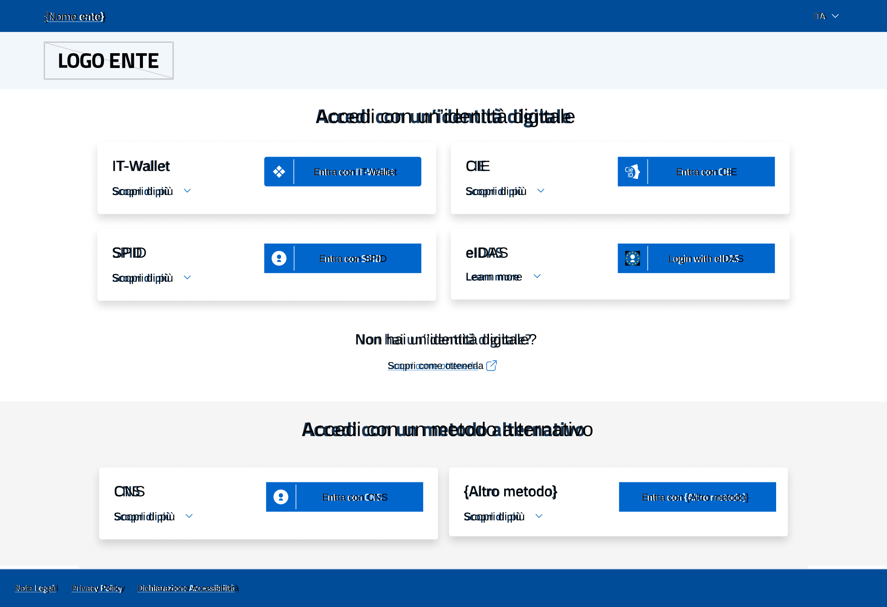
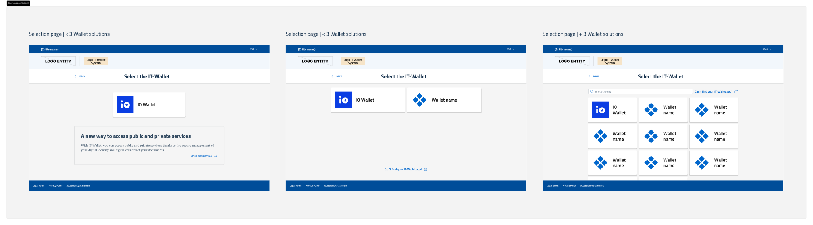
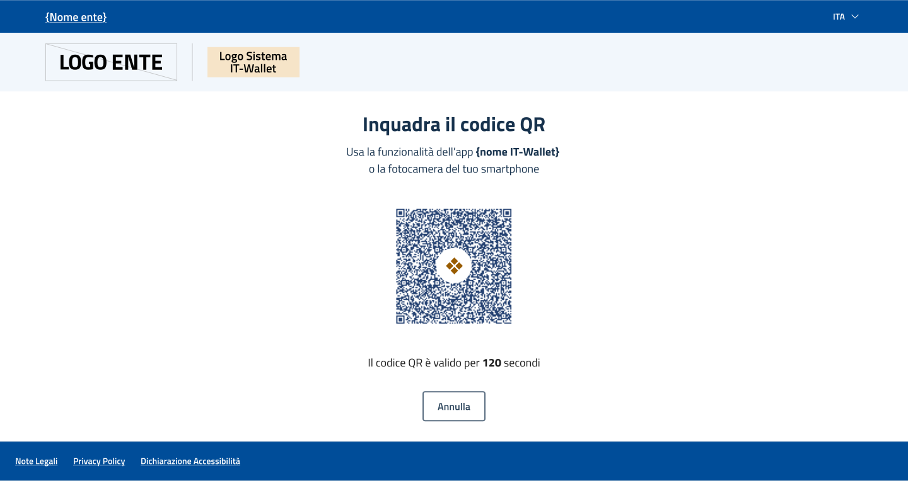
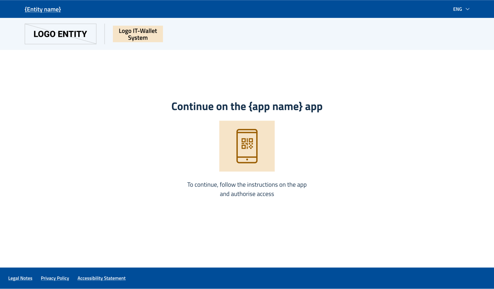
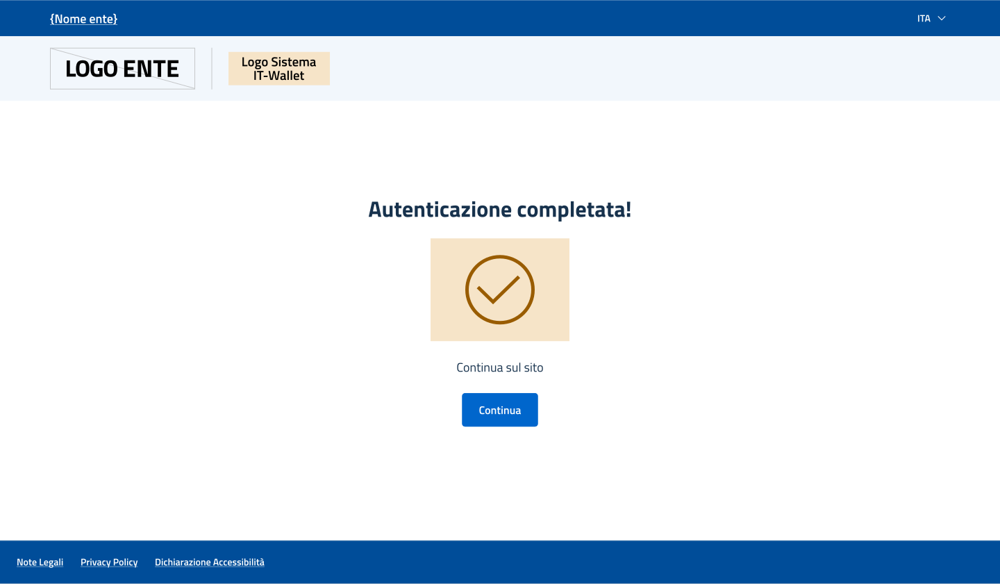
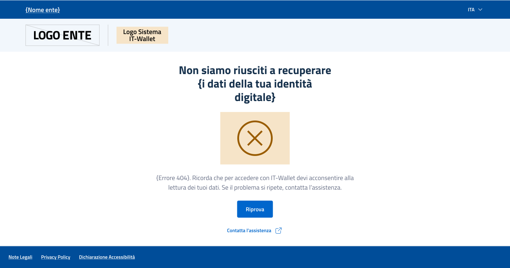

3.1. User Experience Design¶
3.2. Design Principles¶
The IT-Wallet System adheres to the Digital Identity Wallet Paradigm, aiming to provide Users with a simple, fast, and more secure experience when accessing services.
The Wallet Solution serves as the primary Touchpoint, enabling Users to manage and use their PID and Attributes when interacting with public or private entities, in both physical and digital contexts. However, the overall service depends on the interactions of a network of Touchpoints and Technical Solutions, that support its delivery and directly impact the User Experience.
To ensure service quality from a User Experience perspective, Primary Actors, both public and private entities, MUST ensure the usability and accessibility of their Technical Solutions while aligning with the distinctive elements of the IT-Wallet System. Specifically:
Usability: Technical Solutions MUST be designed and maintained to meet high usability standards, to facilitate service adoption and reduce the need for assistance. Public entities MUST adhere to [GL_DESIGN], whereas private entities MAY refer to it as a best practice.
Accessibility: Technical Solutions MUST be designed and maintained to meet high accessibility standards to ensure service access regardless of individual abilities, technological skills, or external and contextual constraints. Public entities MUST adhere to [REF_ACCESSIBILITY], whereas private entities MUST comply with applicable regulations.
Consistency: Technical Solutions MUST be designed and maintained in adherence to the IT-Wallet System's Brand Identity and User Experience functional requirements in this document, to promote the recognizability of components, to ensure the overall system consistency, and to minimize the User's cognitive load.
Design Principles Summary of Contents
3.2.1. Official Resources¶
The references to the Official Resources will be included in the next releases of the present specifications.
3.2.2. Functionalities overview¶
The IT-Wallet System provides Users with a simpler, faster, and more secure way to access services. This service is delivered through the use of a Wallet Solution, whose User Experience is structured into three main phases: pre-use, use, and post-use.
{kind=link}

Fig. 3.4 User Experience phases of Wallet usage¶
The following sections focus on the usage and post-usage phases. They define the functional requirements supporting the User Experience for the activation, acquisition, presentation, management, and deactivation phases, along with interaction requirements related to error management, assistance requests, and feedback collection.
Additional documentation and resources are provided in the Official Resources section.
The Official Resources include recommendations on the required User-Wallet Instance interactions and design best practices that promote consistency across different Wallet Solutions in terms of how functionalities are accessed and used.
To ensure a correct and consistent implementation, Primary Actors:
MUST use Official Resources and MUST comply with all related usage specifications provided;
MAY choose from the available configurations provided, but MUST ensure the correct use of atomic components, such as the Engagement Buttonss;
MUST keep used resources up to date, in line with the latest available version of the Official Resources.
3.2.3. Activation of the Wallet Instance¶
Activation enables the User to access the Wallet Solution's functionalities for securely obtaining, presenting, and managing their Electronic Attestations. The activation process involves User Authentication with the Wallet Instance using their digital identity, which enables the generation of the PID.
Below are the User Experience requirements that the Wallet Provider MUST guarantee via their Wallet Solution:
The User downloads the Wallet Solution onto their device to generate their Wallet Instance;
The User sets an unlock PIN for their Wallet Instance if one has not been previously set in the app. In addition to the PIN, the User can decide to use their own unlock mechanism used within the device and managed at the operating system level (e.g., biometric authentication) as an alternative to the PIN. The User uses the unlock method whenever an authorization is required to ensure security and protect their information;
The User reviews all relevant information regarding the activation process and service usage. Additionally, the User reads any policy from the Provider and PID Provider and/or the service's terms and conditions. The User gives their consent to proceed or declines to cancel the operation;
The User selects an Authentication option from those available;
The User completes the Authentication flow with the National Identity Provider's service;
The User receives confirmation of the Authentication process outcome. If successful, the User views a preview of their PID. The User confirms the previewed information to proceed with Wallet Instance activation, or cancels the operation;
The User authorizes the operation using the unlock method previously set;
The User receives confirmation of the successful activation of the Wallet Instance.
The Wallet Provider MUST allow the User to remove the PID issued during the activation phase. In addition, the PID Provider SHOULD allow the User to revoke the issued PID through a specific Touchpoint. The Wallet Provider MUST allow the User to always have the option to request the deactivation of their Wallet Instance, even in the absence of the device on which it was installed. For further details, please refer to the Deactivation of the Wallet Instance and Management of Electronic Attestations sections.
In case of errors using the Wallet Instance, the Wallet Provider MUST guarantee that the User receives consistent messages that inform them and guide them toward resolving the issue. For further details, please refer to the Error Management section.
3.2.3.1. Focus on PID – Person Identification Data¶
The PID (Person Identification Data) refers to verified minimum set of informations about the User identity (see Digital Credential Data Model) issued as a result of the activation process and made available in the Wallet Instance. Below are the requirements for displaying and using the PID that each Wallet Provider MUST adhere to, in order to provide a consistent and accessible consultation and usage experience:
The PID MUST be displayed correctly across all devices, ensuring a consistent experience on screens of varying sizes;
The PID MUST be named as defined by the PID Provider;
The PID MUST display its status if different from valid to provide transparency on its lifecycle and MAY display it if valid. Specific details about the PID status, if invalid, MAY be provided (e.g., the reason why the PID is revoked);
The PID MUST include Action Buttons to enable lifecycle management and allow the User to revoke the PID, thus the entire Wallet Instance with all EAAs issued, or to update the PID at any time (see Management of Electronic Attestations);
The PID MUST be an interactive element, for the User to be authenticated by a Relying Party in a digital context (see Authentication), to access services in proximity contexts, and to request the issuance of additional EAAs (see Issuance of Electronic Attestations of Attributes);
The PID MUST display a method of assistance by the PID Provider (see User Assistance);
The PID MUST be recognizable by the User and distinguishable from other EAAs;
The PID MUST be named with the naming convention that will be defined in this document's future version, avoiding custom or technical terms such as “Person Identification Data” or its acronym “PID”;
The PID representation MUST adhere to a defined set of specifications provided by the PID Provider to ensure recognizability, consistency and homogeneity among different Wallet Solutions.
The PID Provider MUST:
Implement a name/naming convention to refer to the PID, to guarantee consistency across all Wallet Solutions;
Define a clear set of specifications for the PID to ensure consistent identification and representation of the PID across different Wallet Solutions, in terms of format, structure and appearance standards (e.g. color, background image, etc.).
3.2.4. Issuance of Electronic Attestations of Attributes¶
Once activation is complete, the User MAY obtain one or more Electronic Attestations of Attributes within their Wallet Instance.
Depending on the User's specific needs, the type of Electronic Attestation of Attributes, and the offerings available from the Wallet Provider, the Electronic Attestation of Attributes Provider, and the Authentic Source, the request of Electronic Attestations of Attributes can occur in two ways:
from the Wallet Instance Catalog: the User explores the list of Electronic Attestations of Attributes provided by the Wallet Solution, selects the one of interest, and initiates the request process, concluding with the issuance of the Electronic Attestation of Attributes in the Wallet Instance;
from a Touchpoint of the Authentic Source (or the Electronic Attestation of Attributes Provider if it coincides with the Authentic Source): the User interacts with the digital service of the Authentic Source, allowing them to get a specific Electronic Attestation of Attributes in their Wallet Instance via an Engagement Button.
Although the methods for initiating the request are different, the issuance flows share a similar structure and process.
3.2.4.1. Issuance from the Wallet Instance Catalog¶
Below are illustrated the User Experience requirements for the issuance of an Electronic Attribute Attestation from the Catalog that the Wallet Solution Provider MUST guarantee through their own Wallet Solution:
The User accesses their Wallet Instance using the unlock method previously set;
The User selects the Electronic Attestation of Attributes they wish to request from the available options in the Catalog;
The User selects from which Electronic Attestation Provider they want to obtain the Electronic Attribute Attestation, if there is more than one;
The User views any additional information on requirements and/or limitations related to obtaining the Electronic Attestation of Attributes from the Authentic Source;
The User views the PID data, if required by the Authentic Source for the request of the Electronic Attestation of Attributes, the name of the related Electronic Attestation of Attributes Provider, and any related information policy. The User gives their consent to proceed, presenting their PID data to the Electronic Attestation of Attributes Provider, or cancels the operation;
The User views any additional information on requirements and/or limitations related to obtaining the Electronic Attestation of Attributes from the Authentic Source;
The User views a preview of the Electronic Attestation of Attributes. The User confirms the data shown in the preview to proceed with the request or cancels the operation;
The User authorizes the operation using the unlock method previously set;
The User views the positive outcome of the request;
The User views the details of the requested Electronic Attestation of Attributes, including: the data contained in it, the name of the Electronic Attestation of Attributes Provider who issued the Attestation, and the name of the Authentic Source;
The User has access to all issued Electronic Attestations by navigating the Wallet Instance.
If the Authentic Source considers it useful, it MAY provide the User with additional information related to an Electronic Attestation of Attributes. This information MUST be displayed by the Wallet Provider to the User in the Wallet Instance, before initiating the process of issuing the Electronic Attestation of Attributes. In order to properly draft this informational content, the Authentic Source:
MUST use clear language (e.g. avoid technical or complex terms), be concise (e.g. avoid excessively long or elaborate texts) and inclusive (e.g. avoid ability-based verbs), following the best practices for writing, language and tone of voice described in [REF_ACCESSIBILITY] and, in the case of public entities, in [GL_DESIGN];
MUST adhere to the specific purpose of the text, communicating useful information to the User before engaging in the issuance process (e.g. listing prerequisites or stating limitations that could affect the successful outcome of the procedure);
MUST ensure that the information is constantly updated;
MUST include a title and text in which it MAY include references to external channels to direct users to a procedure, explore a specific topic and/or open support requests.
Following is an example of informative text:
Title: Do you already have the physical document?
Text: To obtain the digital version of [Document name], you must already have obtained the corresponding physical document. For more details, [read more information] (URL).
For further information, please refer to the section Digital Credentials Catalogue (see claim “user_information”).
The Wallet Provider MUST allow the User to remove an Electronic Attestation of Attributes through their Wallet Instance at any moment. In case of absence of the device where the Wallet Instance was activated, the Wallet Provider MUST allow the User to deactivate the entire Wallet Instance through a specific Touchpoint. In addition, the Electronic Attestation of Attributes Providers SHOULD allow the User to revoke the issued Digital Credentials through specific Touchpoints. For more details, please refer to the Deactivation of the Wallet Instance and Management of Electronic Attestations sections.
In the event of communication issues between the systems of the Electronic Attestation of Attributes Provider and the Authentic Source, or if administrative or technical processes prevent the immediate issuance of the Electronic Attestation of Attributes, the actors involved MAY support a deferred issuance process. In this case the Wallet Provider MUST guarantee that:
Upon reaching the final step of the process, the User visualizes a message prompting them to wait until the Electronic Attestation of Attributes can be issued.
The User is informed by the Electronic Attestation of Attributes Provider once the Electronic Attestation of Attributes becomes available.
If the User encounters incorrect data in an already obtained or in-progress Electronic Attestation of Attributes, the Wallet Provider SHOULD guarantee the User appropriate assistance via their Wallet Instance. For more information, please refer to the User Assistance section.
In case of errors using the Wallet Instance, the Wallet Provider MUST guarantee that the User receives consistent messages that inform them and guide them toward resolving the issue. For further details, please refer to the Error Management section.
3.2.4.2. Issuance from a Touchpoint of the Authentic Source¶
Below are illustrated the User Experience requirements for the issuance of an Electronic Attribute Attestation from the Catalog that the Wallet Solution Provider MUST guarantee through their own Wallet Solution:
The User interacts with the Engagement Button clearly displayed in the Touchpoint interface;
The User selects the Wallet Solution with which to proceed, through an interface that SHOULD follow the directions and functionalities described for the Selection Page in the :ref:functionalities:Authentication section;
(cross-device only) the User scan a QR code that invokes the opening of their chosen Wallet Instance, through an interface that SHOULD follow the directions and functionalities described for the QR code page in the :ref:functionalities:Authentication section;
(cross-device only) the User displays a message inviting them to continue on their chosen Wallet Instance, through an interface that SHOULD follow the directions and functionalities described for the waiting page in the :ref:functionalities:Authentication section;
The User accesses their Wallet Instance using the unlock method previously set;
The User views the PID data, if required by the Authentic Source for the request of the Electronic Attestation of Attributes, the name of the related Electronic Attestation of Attributes Provider, and any related information policy. The User gives their consent to proceed, presenting their PID data to the Electronic Attestation of Attributes Provider, or cancels the operation;
The User views any additional information on requirements and/or limitations related to obtaining the Electronic Attestation of Attributes from the Authentic Source;
The User views a preview of the Electronic Attestation of Attributes. The User confirms the data shown in the preview to proceed with the request or cancels the operation;
The User authorizes the operation using the unlock method previously set;
The User views the positive outcome of the request;
The User views the details of the requested Electronic Attestation of Attributes, including: the data contained in it, the name of the Electronic Attestation of Attributes Provider who issued the Attestation, and the name of the Authentic Source.
In case of errors during the issuance of the Electronic Attestation of Attributes, the Authentic Source MUST guarantee that the User receives consistent messages that inform them and guide them toward resolving the issue. For further details, please refer to the :ref:functionalities:Error Management section.
3.2.4.3. Focus on Electronic Attestations of Attributes¶
The EAAs obtained within the Wallet Instance SHOULD be displayed in a list within a Preview View. In this case, each EAA MUST ensure a high level of recognizability and accessibility [REF_ACCESSIBILITY] of the information contained. Below are the requirements for displaying the EAA that each Wallet Provider MUST adhere to in order to provide a consistent and accessible consultation and usage experience:
The EAA MUST be displayed correctly across all devices, ensuring a consistent experience on screens of varying sizes;
The name of the EAA MUST be clearly visible and always displayed in both the Detail View and the Preview View;
The EAA, both in the Preview View and the Detailed View, MUST display its status if different from valid to provide transparency on its lifecycle and MAY display it if valid. The Preview View MAY also include additional Attributes to enhance the User Experience and management; for example, it MAY display the name or logo of the Electronic Attestation of Attributes Provider or the PID Provider. The Detailed View MAY provide specific details about the state if invalid (e.g., the reason why the EAA is revoked);
The EAA MUST include Action Buttons in the Detail View to enable lifecycle management and allow the User to revoke or to update a EAA at any time (see Management of Electronic Attestations);
The EAA MUST be an interactive element, for the User to access services provided by Relying Parties in digital and proximity contexts (see Presentation of Electronic Attestations);
The EAA MAY be displayed in a card format in their Preview View, in line with approaches already used by other digital wallets in the market, to mirror the appearance of a corresponding physical document. When applicable, the digital nature of the document MAY be indicated, such as by labeling it as a "digital version" in the layout;
The EAA MUST display the same information in the Detail View as shown in the Preview View and MAY include additional details;
The EAA MUST display a method of assistance (see User Assistance);
The EAA layout in the Preview View MUST be optimized for scalability and usability, especially when multiple EAAs are displayed on the same screen;
The EAA representation MUST adhere to a defined set of specifications provided by the Electronic Attestation of Attributes Provider to ensure recognizability, consistency and homogeneity among different Wallet Solutions.
The Electronic Attestation of Attributes Provider:
MUST define a name/ naming convention to refer to the EAAs issued, to guarantee consistency across all Wallet Solutions; the EAA name MUST be comprehensible and user-friendly avoiding technical terms or acronyms whenever possible;
MUST define a clear set of specifications for the EAA to ensure consistent identification and representation of the EAA across different Wallet Solutions, in terms of format, structure, and appearance standards (e.g. color, background image, etc.).
3.2.5. Presentation of Electronic Attestations¶
The presentation process allows the User to access a service or demonstrate ownership of certain data or their eligibility to perform a specific action. The presentation of Electronic Attestations and their subsequent verification involves interaction between the Wallet Instance, managed by the User, and a Relying Party Instance. Depending on the circumstances and context of the interaction, the following scenarios can be outlined:
Proximity Presentation: the User presents the PID and/or EAA data through the Wallet Instance, directly to a Verifier or to a device designated for in-person verification.
Remote Presentation: the User presents the PID and/or EAA data through the Wallet Instance, to a Relying Party configured for online verification, for instance, to Authenticate and access the services offered.
3.2.5.1. Proximity Presentation¶
Proximity presentation allows the User to present the PID and/or EAA data via their Wallet Instance, using one of two methods:
Supervised mode: the User presents the PID and/or EAA data through the Wallet Instance to a Verifier (e.g., law enforcement officer, desk operator) equipped with a dedicated verification system (:ref:relying-party-instance:Mobile Relying Party Instance).
Unsupervised mode: the User presents the PID and/or EAA data through the Wallet Instance to a designated device (e.g., turnstile, totem) provided with a dedicated verification system (Embedded Relying Party Instance).
Below are the User Experience requirements related to both methods that the Wallet Provider MUST guarantee via their Wallet Solution.
Supervised Mode
The User accesses their Wallet Instance using the unlock method previously set;
The User navigates to the feature dedicated to QR Code generation;
The User presents the generated QR Code to the Verifier acting on behalf of the Relying Party, who scans it using the designated verification app or system;
The User reviews the requested PID and/or EAA data, the name of the requesting Service Provider, and any related policy. The User decides whether to present any non-mandatory PID and/or EAA data (Selective Disclosure). The User provides consent to proceed or cancels the operation;
The User authorizes the operation using the unlock method previously set;
The User receives confirmation of the successful presentation.
In case of errors using the Wallet Instance, the Wallet Provider MUST guarantee that the User receives consistent messages that inform them and guide them toward resolving the issue. For further details, please refer to the Error Management section.
Unsupervised Mode
The User accesses their Wallet Instance using the unlock method previously set;
The User navigates to the feature dedicated to QR Code generation;
The User presents the generated QR Code to the designated device (e.g., a turnstile) of the Relying Party for scanning;
The User reviews the requested PID and/or EAA data, the name of the requesting Relying Party, and any related policy. The User decides whether to present any non-mandatory PID and/or EAA (Selective Disclosure). The User provides consent to proceed or cancels the operation;
The User authorizes the operation using the unlock method previously set;
The User receives confirmation of the successful presentation.
In case of errors using the Wallet Instance, the Wallet Provider MUST guarantee that the User receives consistent messages that inform them and guide them toward resolving the issue. For further details, please refer to the Error Management section.
3.2.5.2. Remote Presentation¶
Remote presentation allows the User to present the PID and/or EAA data by interacting with a Relying Party's Touchpoint through a designated Engagement Button.
This presentation can occur in two different modes, depending on the type of device used to access the service:
Same-device mode: when the User accesses an online digital service integrated with a special verification system (:ref:relying-party-instance:Web Relying Party Instance) using the same device on which the Wallet Instance is installed;
Cross-device mode: when the User accesses a digital service integrated with a special verification system (:ref:relying-party-instance:Web Relying Party Instance) using a different device from the one where the Wallet Instance is installed.
Below are the User Experience requirements related to both methods that the Wallet Provider MUST guarantee via their Wallet Solution.
Same-Device Mode
The User clicks the Engagement Button provided on the Relying Party's Touchpoint;
The User accesses their Wallet Instance using the unlock method previously set;
The User reviews the requested PID and/or EAA data, the name of the requesting Relying Party, and any related policy. The User decides whether to present any non-mandatory PID and/or EAA data (Selective Disclosure). The User provides consent to proceed or cancels the operation;
The User authorizes the operation using the unlock method previously set;
The User receives confirmation of the successful presentation within the Wallet Instance;
The User returns to the Relying Party's Touchpoint, where they see confirmation of the completed presentation.
In case of errors using the Wallet Instance, the Wallet Provider MUST guarantee that the User receives consistent messages that inform them and guide them toward resolving the issue. For further details, please refer to the Error Management section.
Cross-Device Mode
The User clicks the Engagement Button provided on the Touchpoint of the Relying Party while accessing the service from a different device than the one where the Wallet Instance is installed;
The User accesses the desired Wallet Instance from the device where it is installed, using the unlock method previously set;
The User scans the QR Code provided by the Relying Party using their Wallet Instance;
The User reviews the requested PID and/or EAA data, the name of the requesting Relying Party, and any related policy. The User decides whether to present any non-mandatory personal data (Selective Disclosure). The User provides consent to proceed or cancels the operation.
The User authorizes the operation using the unlock method previously set;
The User receives confirmation of the successful presentation within the Wallet Instance;
The User returns to the Relying Party's Touchpoint and views confirmation of the completed presentation.
In case of errors using the Wallet Instance, the Wallet Provider MUST guarantee that the User receives consistent messages that inform them and guide them toward resolving the issue. For further details, please refer to the Error Management section.
3.2.5.2.1. Authentication¶
Authentication is a specific use case of remote presentation that allows the User to securely access services provided by both public and private Relying Parties. This is achieved by presenting the PID and, if necessary, a set of Attributes contained in the obtained Electronic Attestations of Attributes. This process ensures that the User retains control over their data, including the ability to present only the information strictly necessary for verification by Relying Parties.
The Authentication process can be carried out using both the same-device and cross-device modes described above. For the User Experience functional requirements that MUST be addressed, please refer to the functional requirements for remote presentation in same-device and cross-device modes.
From a User Experience perspective, the Authentication process differs from the Presentation process only in how it is initiated, which is through a dedicated Authentication Button.
To ensure a consistent and seamless Authentication process across all Relying Parties, each Relying Party MUST follow the visual and User Experience requirements outlined below, together with compliance with [REF_ACCESSIBILITY] and, in the case of public entities, with [GL_DESIGN]
Relying Parties SHOULD use the Official Resources for design and development. If a Relying Party does not intend to use such open source resources, MAY independently develop the Technical Solutions enabling the Authentication flow.
Note
The images in this section are to be considered illustrative as they are the subject of interface (UI) evolutions, pending the definition of the branding of the IT-Wallet System.
Relying Parties MUST implement and provide the following pages as part of the Authentication process:
Discovery Page: lists all the available Authentication methods;
Selection Page: shows the User all the Wallet Solutions available in the Register and let them choose which one to continue the Authentication process with;
QR Code page (cross-device only): prompts the User to scan a QR code;
waiting page (cross-device only): instructs the User to continue the Authentication process on their Wallet Instance;
thank you page: confirms the successful Authentication;
error page: displays error messages related to the Authentication process.
Each of these pages MUST include the following recurring elements, in line with the Visual Identity of the Relying Party's Touchpoint:
A header and/or subheader allowing Users to navigate back to the previous page.
A footer including the privacy policy, legal notice, and accessibility statement, where required by current regulations.
Specific requirements for each individual page are detailed below.
Discovery Page
To enable authentication via the IT-Wallet System, the Relying Party MAY replace its existing Discovery Page with the version provided in the Official Resources.
{kind=link}

Fig. 3.6 Layout Model of Discovery Page in grid¶
Alternatively, the Relying Party MAY maintain its own Discovery Page but MUST integrate the Authentication Button as specified in the Authentication Button section.
The Relying Party implementing the page:
MUST display all available Digital Identity Authentication methods, including the IT-Wallet System Authentication through the Authentication Button;
MAY also present alternative Authentication methods, if available;
SHOULD provide essential supporting information to help the User make an informed and conscious choice.
If the User accesses the Discovery Page from a different Touchpoint than the one where the Wallet Instance is activated (cross-device), selecting IT-Wallet System Authentication MUST redirect the User to the QR code page.
If the User accesses the Discovery Page from the same Touchpoint where the Wallet Instance is activated (same-device), the selection MUST trigger the opening of the User's Wallet Instance.
Selection Page
The Selection Page is the page on which the User lands after they have chosen to Authenticate via the IT-Wallet System, and is intended to present the User with the Wallet Solutions available to perform Authentication.
The Relying Party SHOULD implement the Selection Page made available in Official Resources.
{kind=link}

Fig. 3.8 Selection Page¶
In any case, the Relying Party implementing the page:
MUST include the elements proper to the Visual Identity of the IT-Wallet System, including the Logo by placing it alongside its own logo according to the guidance provided in the Visual Identity section 2.1.2;
SHOULD ensure that the copy on the page mirrors that reported in Official Resources;
MUST present each Wallet Solution in the IT-Wallet Register through a modular component that displays the logo and name in full;
MUST present the Wallet Solutions in a dynamic layout that adapts to the number of Wallet Solutions available: when less than 3 MUST distribute them in a 2-column grid, when less than 2 MUST use a center-column layout; in all cases random sorting MUST be guarantee;
MAY include a text component to promote the Authentication mode via IT-Wallet, which links back to the System's official website, as represented in Official Resources;
MUST allow the User to search for a Wallet Solution through a filter feature by name, when more than 5 Wallet Solutions are present;
MUST allow the User to find out, when needed, which Wallet Solutions are available in the Register by preparing a cross-reference to the official site of the IT-Wallet System;
MUST include a Call to Action that allows the User to abort the operation and return to the Discovery Page.
QR code page (cross-device only)
The QR code page is presented to the User who selects IT-Wallet System Authentication within a cross-device process. Its purpose is to prompt the User to scan the generated QR code using their Wallet Instance.
Relying Parties SHOULD implement the QR code page (cross-device) provided in the Official Resources.
{kind=link}

Fig. 3.10 QR code page¶
The Relying Party implementing the page:
MUST include the Visual Identity elements of the IT-Wallet System, including the logo;
SHOULD ensure that the copy on the page mirrors that reported in Official Resources;
MUST include a Call To Action allowing the User to generate a new QR code in case of timeout;
MUST include a Call To Action allowing the User to cancel the operation and return to the Discovery Page.
Furthermore, in compliance with [REF_ACCESSIBILITY], regarding the QR code, the Relying Parties:
MUST respect the minimum recommended dimensions to ensure effective scanning. A size of 150x150 pixels is generally adequate, but for codes with high data density (e.g. long URLs or numerous characters), it is advisable to increase it to 300x300 pixels or more;
MUST ensure minimum contrast between the QR code and the background (the ideal condition provides for a white background with a black QR code);
MUST avoid color inversions between background and QR code;
MUST limit the presence to only one QR code per page;
MUST ensure sharpness and high quality;
MUST ensure SVG format;
MUST ensure that it is not partially hidden by text or other elements.
Waiting page (cross-device only)
The waiting page is shown after the QR code has been scanned and prompts the User to continue the Authentication process within their Wallet Instance.
Relying Parties SHOULD implement the waiting page (cross-device) provided in the Official Resources.
{kind=link}

Fig. 3.12 Waiting page¶
The Relying Party implementing the page:
MUST include the Visual Identity elements of the IT-Wallet System, including the logo and an icon or graphical element that reinforces the page message;
SHOULD ensure that the copy on the page mirrors that reported in Official Resources.
Thank you page
The thank you page is displayed after the User completes the Authentication process via their Wallet Instance. Its purpose is to prompt the User to proceed to the authenticated area of the Relying Party's Touchpoint.
Relying Parties SHOULD implement the thank you page provided in the Official Resources.
{kind=link}

Fig. 3.14 Thank you page¶
The Relying Party implementing the page:
MUST include the Visual Identity elements of the IT-Wallet System, including the logo and an icon or graphical element that reinforces the page message;
SHOULD ensure that the copy on the page mirrors that reported in Official Resources;
MUST include a Call To Action prompting the User to proceed to the Touchpoint authenticated area.
Error page
The error page is displayed when an issue occurs during the Authentication process. Its purpose is to inform the User about the nature of the error (e.g., technical issue, network issues, Wallet Instance malfunction, denied data sharing, etc.) and to present the available next steps. For further details, refer to the Error Management section.
Relying Parties SHOULD implement the error page provided in the Official Resources.
{kind=link}

Fig. 3.16 Error page¶
The Relying Party implementing the page:
MUST include the Visual Identity elements of the IT-Wallet System, including the logo and an icon or graphical element that conveys the type of error;
SHOULD ensure that the copy on the page mirrors that reported in Official Resources;
MUST include one or more Call To Action guiding the User toward the appropriate next step (e.g., retry, contact support, etc.).
{kind=link}
{kind=link}
3.2.6. Management of Electronic Attestations¶
The Wallet Provider, via their Wallet Solution, and the PID provider or Electronic Attestations of Attributes Provider, via dedicated Touchpoints, MUST let the User manage their Electronic Attestations at any time.
This section outlines three different categories of requirements for managing each Electronic Attestations, specifically regarding:
Its status: to allow the User to verify whether an Electronic Attestation is valid or invalid;
Its usage: to enable the User to view and manage the history of presentations carried out with an Electronic Attestation;
Its data: to allow the User to backup and restore each Electronic Attestation of Attributes in compliance with the principle of data portability.
Below are the key aspects that impact and define the User Experience in managing Electronic Attestations though the Wallet Instance, along with the functional requirements associated with each category.
3.2.6.1. Status of Electronic Attestations¶
To ensure reliability and promote the proper use of a Wallet Solution, the Wallet Provider MUST guarantee the User to always have visibility of the status of the Electronic Attestations stored within their Wallet Instance, based on the information received from the Electronic Attestation Provider, which manages their lifecycle.
Each Electronic Attestation can be either valid or invalid, with corresponding impacts on its usage opportunities:
Valid: Valid Electronic Attestations MUST be usable and therefore presentable. This category also includes Electronic Attestations that are nearing expiration. If an Electronic Attestation is about to expire, the Wallet Instance SHOULD inform the User with adequate advance notice to allow sufficient time to request its reissuance or, if necessary, revoke it.
Invalid: Invalid Electronic Attestations MUST NOT be usable or presentable. This category includes expired or revoked Electronic Attestations. In such cases, the Wallet Instance MUST inform the User of the invalid status and SHOULD give the reason why. If an Electronic Attestation is no longer valid and cannot be used in any scenario, the Wallet Solution MAY implement mechanisms to restrict access to the Detailed View of that Electronic Attestation. This is intended to encourage the User to update or delete the Electronic Attestation by providing appropriate informational text and a Call to Action.
3.2.6.1.1. Revocation of Electronic Attestations¶
Revocation is the procedure that turns an Electronic Attestation from a valid state to an invalid state. Revocation can occur in either an active or passive mode:
Active revocation: This refers to the revocation of an Electronic Attestation at the User's request. This process affects only the Electronic Attestation and not its corresponding physical document, if one exists. Below is an illustrative list of scenarios in which the Wallet Provider MUST give the User the ability to request the revocation of an Electronic Attestation:
The User decides they no longer wish to use a specific Electronic Attestation;
The User decides to deactivate their Wallet Instance, thereby revoking all previously obtained Electronic Attestations;
The User no longer has possession of the device on which their Wallet Instance is installed due to loss or theft.
Passive revocation: This refers to the revocation of an Electronic Attestation managed by the respective Electronic Attestation Provider on behalf of the Authentic Source. In this case, the Wallet Instance MUST inform the User of the status change of the Electronic Attestation and the Electronic Attestation Provider MAY additionally notify the User via other Touchpoints . Below is an illustrative list of scenarios that could lead to the revocation of an Electronic Attestation:
The physical document corresponding to the Electronic Attestation has been reported lost or damaged by the User through the appropriate channel/ Touchpoint;
The physical document corresponding to the Electronic Attestation has been revoked by the competent authorities;
The minimum security and/ or reliability requirements for one or more involved parties are no longer met.
The User's device no longer meets the minimum security requirements (rooted or jailbroken).
3.2.6.2. History of Electronic Attestations¶
To ensure the principles of visibility and transparency, the Wallet Provider MUST guarantee the User to view the history of all Electronic Attestations presentations performed using their Wallet Instance. In particular:
The Wallet Instance MUST show the User which Relying Party they have interacted with and which Electronic Attestations have been presented and verified;
The Wallet Instance MUST allow the User to easily request the Relying Party to delete their information related to previous presentations.
3.2.6.3. Backup and Restore of Electronic Attestation of Attributes¶
With the aim of ensuring the principle of data portability, the Wallet Solution MUST guarantee the User to have access to specific functionalities, particularly to:
Request the backup and storage of Electronic Attestations of Attributes obtained through their Wallet Instance;
Request the restore of their Electronic Attestations of Attributes on another Wallet Instance.
3.2.7. Deactivation of the Wallet Instance¶
The deactivation of the Wallet Instance is the functionality that makes the Wallet Instance inactive and therefore no longer operational. The deactivation process can be triggered by different actors depending on the circumstances, specifically:
By the User, in cases such as:
The device has been lost or stolen;
The device has been compromised;
The device has been reset to factory settings.
By an authorized third party, in cases such as:
The Wallet Solution no longer meets the minimum security requirements.
The Wallet Provider MUST guarantee the User the ability to voluntarily deactivate their Wallet Instance through:
The Wallet Instance itself;
A Touchpoint (e.g., a website) provided by the Wallet Provider;
The device's app store, by uninstalling the Wallet Instance.
Below are the functional and User Experience requirements that the Wallet Provider MUST guarantee via their Wallet Solution:
The User accesses their Wallet Instance using the previously configured unlock method or Authenticates at the Touchpoint provided by the Wallet Provider;
The User selects the Wallet Instance deactivation functionality;
The User is informed that deactivating the Wallet Instance will invalidate previously obtained Electronic Attestations;
The User confirms the action to proceed with deactivation, or cancels the operation;
The User receives confirmation of successful deactivation;
The User is notified that the Wallet Instance is inactive when logging in again;
The User has the ability to reactivate the Wallet Instance by re-downloading the app from the app store (if uninstalled) and/or by following the activation process again. For further details, please refer to the Activation of the Wallet Instance section.
Once the Wallet Instance is reactivated, Electronic Attestations of Attributes can be re-obtained by starting the issuance or restore process again. For more details, please refer to sections Issuance of Electronic Attestations of Attributes and Backup and Restore of Electronic Attestation of Attributes.
In case of errors using the Wallet Instance, the Wallet Provider MUST guarantee that the User receives consistent messages that inform them and guide them toward resolving the issue. For more details, please refer to the Error Management section.
3.2.8. Error Management¶
The IT-Wallet System involves the interaction of multiple services provided by different actors. It is therefore important to define an effective error management model with the goal of improving the perception and reliability of the entire ecosystem and enabling the User to feel guided during interactions with the various Technical Solutions and to consciously manage any issues while using the service.
Effective communication in case of an error also provides benefits for the actors involved, as it contributes to the reduction of assistance requests and, thus, to the minimisation of the impact on support systems.
It is crucial that each Primary Actor implements a proper error management, in compliance with current Technical Specification, in order to communicate them, directly or indirectly, to the User and through the IT-Wallet Instance. Errors can be categorized, based on their nature, as follows:
The stage of the User Experience where the error may occur: activation or deactivation of the Wallet Instance, obtaining, presenting, or managing Electronic Attestations of Attributes;
The type of error: system error, communication error between actors, etc.;
The actor responsible for the error: Wallet Provider, PID Provider, Electronic Attestations of Attributes Provider, Authentic Source;
The way the error is displayed: message on the page, banner, toast message, and so on;
Suggested actions for the User to resolve the error: suggestion to wait, request to try again, referral to FAQs and/or customer care, etc.;
The method for error management: opening an assistance request through the Wallet Instance, linking to other detailed channels, and so on. For further details, please refer to the User Assistance section.
Below is a non-exhaustive list of the main error cases, with reference to the actor responsible for their management, for each phase of the User Experience. The detailed list of errors to be managed for each interaction endpoint with the User is available in the dedicated error sections within Endpoints.
3.2.8.1. Activation of the Wallet Instance Errors¶
Error type |
Actor in charge |
|---|---|
The device does not support the Wallet Solution (e.g. absence of minimum security or technological requirements) |
Wallet Provider |
The Wallet Provider's services are unresponsive (e.g. technical errors or lack of connection) |
Wallet Provider |
The PID Provider's services are unresponsive (e.g. technical errors) |
PID Provider |
The Authentication process on the National Identity Provider's service was unsuccessful (e.g. technical errors, unrecognized identity, etc.) |
National Identity Provider |
3.2.8.2. Issuance of Electronic Attestations of Attributes Errors¶
Error type |
Actor in charge |
|---|---|
The Wallet Instance and/or the PID are not active |
Wallet Provider |
The service for obtaining an Electronic Attestation of Attributes is unavailable (e.g. technical errors) |
Electronic Attestations of Attributes Provider, Authentic Source |
The User is unable to obtain a specific Electronic Attestation of Attributes in their Wallet Instance (e.g. no eligibility, invalid or expired physical version, etc.) |
Authentic Source |
3.2.8.3. Presentation of Electronic Attestations Errors¶
Error type |
Actor in charge |
|---|---|
The User does not hold the required Attributes contained in one or more Electronic Attestations within their Wallet Instance to access a specific service |
Wallet Provider |
The Wallet Provider's services or the Relying Party's services are unresponsive (e.g. technical errors or lack of connection) |
Wallet Provider, Relying Party |
3.2.8.4. Management of Electronic Attestations Errors¶
Error type |
Actor in charge |
|---|---|
The service for revocation/ backup/ restore of an Electronic Attestation of Attributes is unavailable (e.g. technical errors) |
Electronic Attestations of Attributes Provider |
The service for revocation of PID is unavailable (e.g. technical errors) |
PID Provider |
3.2.8.5. Deactivation of the Wallet Instance Errors¶
Error type |
Actor in charge |
|---|---|
The service for deactivating the Wallet Instance is unavailable (e.g. technical errors) |
Wallet Provider |
In addition to error management, all Primary Actors MUST also deal with negative feedback resulting from the User's decision to abandon or cancel a flow (e.g. Activation, Acquisition, Presentation, etc.). In such cases, feedback MUST be provided to confirm the User's choice, and it MAY include a Call to Action to continue.
3.2.9. User Assistance¶
For effective error management and the resolution of any other issues, Primary Actors MUST ensure adequate support to the User by structuring a simple and effective assistance model based on the following principles:
Self-resolution: to allow the User to consult the frequently asked questions (FAQs) about the content and functionalities of the Wallet Instance, in order to resolve any error cases or issues independently.
Guided issue reporting: to guide the User through the process of opening an assistance ticket, in order to clearly define the issue and facilitate its resolution.
Collaboration between actors: to allow the coordination among each actor involved (Wallet Provider, Electronic Attestations of Attributes Provider, PID Provider, and Authentic Source), according to their specific roles and operational procedures.
Efficient communication: to allow the User to track the updated status of their request throughout all stages of processing, with clear, continuous, and coordinated communication.
To apply these best practices, the involved actors SHOULD implement the following hierarchical support levels:
Level I | Self-management: the Wallet Provider SHOULD allow the User to access to a Frequently Asked Questions (FAQ) section within their Wallet Instance to clarify doubts and resolve certain issues independently. Each actor SHOULD create specific FAQs and corresponding answers regarding the data and functionalities they provide to the Wallet Provider or in their Touchpoints. For certain error cases, the Wallet Provider SHOULD provide another actor's direct channel of support to facilitate timely management and avoid opening an assistance request within the Wallet Instance.
Level II | Requesting assistance from the Wallet Provider: if Level I is insufficient, the Wallet Provider SHOULD give the User the possibility to open one or more assistance requests, perform a diagnosis and proceed with resolving the issue, if within their competence. These requests SHOULD be managed through the Wallet Instance or other Wallet Provider Touchpoints. The Wallet Provider MUST diagnose and resolve the issue if it falls under their responsibility.
Level III | Forwarding the request to the responsible actor: if Level II is insufficient, the Wallet Provider SHOULD ensure that the request is forwarded to the responsible actor (Electronic Attestations of Attributes Provider, PID Provider, or Authentic Source), who ensures the availability of dedicated back-office channels to resolve the issue and communicate the outcome to the User.
Below are the User Experience requirements that the Wallet Solution Provider MUST guarantee through their own Wallet Solution:
The User accesses to assistance options at any point during the User Experience, with a clear indication of how to access them;
The User opens an assistance request through their Wallet Instance or other Touchpoints provided by the Wallet Provider;
When a support request is open, the User receives prompt confirmation that the request has been acknowledged;
The User is informed in advance if it is necessary to present their data with third parties;
The User is informed when an assistance request needs to be managed outside of their Wallet Instance, such as on third-party channels;
The User tracks the status of the request at any time through functionalities that MUST be made available by the actors dealing with the request.
3.2.10. User Feedback¶
User feedback collection allows for monitoring the User Experience, identifying potential areas for optimization, and continuously measuring the effectiveness of the service. Each Wallet Provider SHOULD establish a structured feedback collection system to monitor and improve the User Experience.
This feedback system MAY be fed by two different types of feedback collection:
Transactional Feedback (Customer Effort Score, Customer Satisfaction): collected in response to specific actions, such as adding an Electronic Attestation or completing a presentation and verification process;
Relational Feedback (Net Promoter Score): not in connection with specific actions, collected to measure the overall perception of the User in terms of satisfaction, loyalty, and likelihood of recommending the service to third-party users.
Here are some suggestions for implementing these types of feedback tools:
Transactional Feedback Collection
Customer Effort Score (CES): To measure the ease of use of the functionalities, surveys MAY be provided, for example, through components like modals or pop-ups within the Wallet Instance, triggered at the conclusion of specific actions or processes. Examples include:
After completing the process of obtaining an Electronic Attestation;
After the Authentication process, if positive;
After the presentation process, particularly at the end of the first presentation opportunity and no more than once every 6 months;
After the revocation and deactivation processes, to explore the reasons behind these actions.
Customer Satisfaction Survey (CSAT): To measure the overall satisfaction of the User after a prolonged period of using the Wallet Instance, surveys MAY be provided, for example, through modals or pop-ups within the Wallet Instance. It is recommended to use the CSAT at intervals of no less than six months and as an alternative to CES, to avoid overwhelming Users with too frequent surveys.
Relational Feedback Collection
Net Promoter Score (NPS): To measure User loyalty and the likelihood of recommending the service to others, an evaluation MAY be requested from the User once or twice a year, either through the same service delivery channel (e.g. the Wallet Instance) or external channels such as email or SMS. This should be aligned with the overall feedback collection strategy.